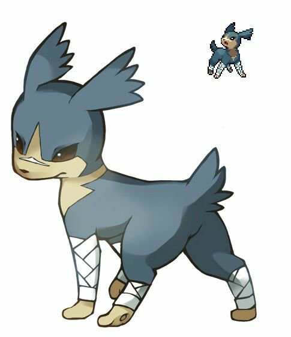
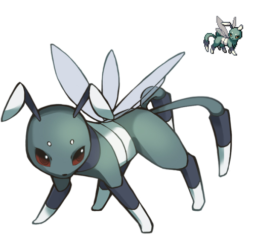
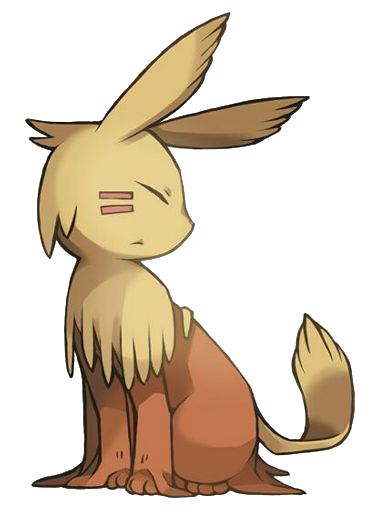

Personal fakeeveelutions list
Brawleon : Fighting-type
Brawleon is a silly goofy goober which has hyperstrength. It can effortless crush titanium into dust, punch quick bullets back to it's sender, and other pro combat skills. As silly as dangerous.
Buzzeon : Bug-type
Buzzeon is an insect-like eeveelution, and possesses lots of insect-related skills. Like pollenization, making honey, producing silk & web from it's... y'know hole... Stinging, and lots of other powers.
Terreon : Ground-type
It's my favorite fakeeveelution. This silly cutie can dig REALLY fast, has built-in x-ray, and has a triple pair of eyelids, for digging purposes. It also has long-ahh claws. And the mascot of my website.